Giugno 2024
A meno di un mese dalle elezioni, progettare l'intera strategia di comunicazione di Aurora Pezzuto, candidata alle Elezioni Europee 2024 per conto di LibDem Europei all'interno della lista di Stati Uniti d'Europa.
Anche se il mondo della politica sembra molto distante da quello aziendale, può essere molto formativo per chi si occupa di strategia e comunicazione. I brand commerciali ormai non vendono più solo il prodotto-servizio, ma anche le idee e i valori che gli ruotano intorno. Idee e valori, proprio come la comunicazione politica!
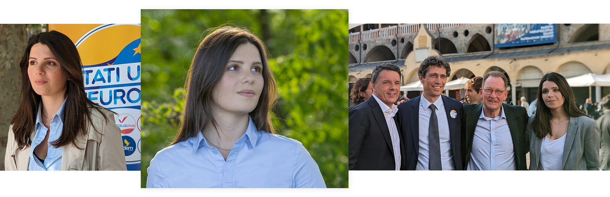
In questa fase si è svolta una profonda analisi del contesto: dallo scenario elettorale all'identità della lista, dai punti di forza e dalle motivazioni della candidata (personal branding) al mercato elettorale e alle sue richieste politiche e comunicative.
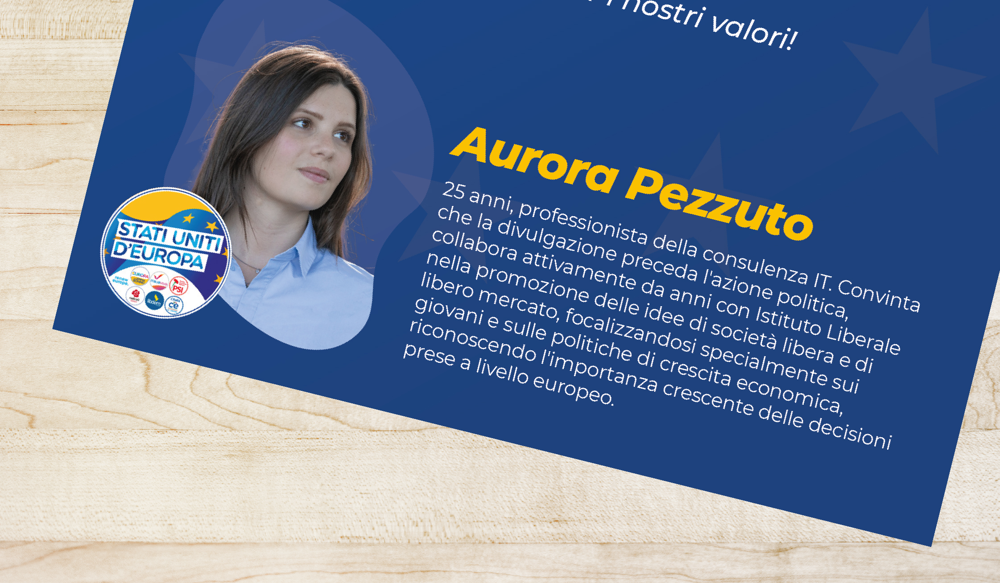
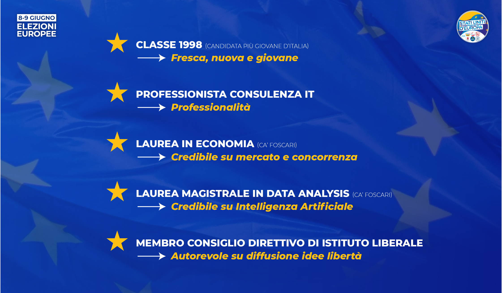
Considerati i risultati delle ricerche e delle analisi, è stato stabilito un chiaro posizionamento che mettesse in luce il differenziale competitivo della giovane candidata (il suo USP) e, di conseguenza, temi distintivi e messaggi efficaci.
Molti elementi di analisi esterna della fase strategica ovviamente non posso mostrarli. Ma ci sono stati e si sono dimostrati fondamentali per impostare le linee guida per la fase di realizzazione.
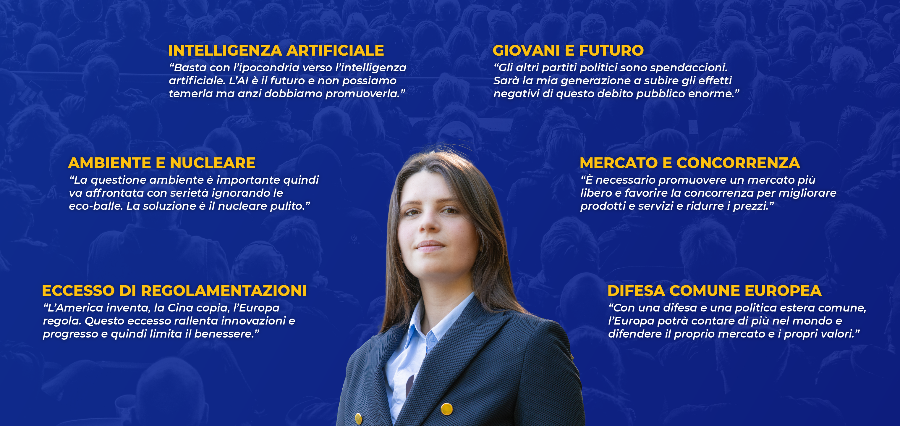
Stabiliti insieme alla candidata i temi e i messaggi della campagna, l'obiettivo è diventato progettare e definire una strategia di comunicazione transmediale, in cui contenuti diversi vengono proposti ad audience specifiche attraverso canali differenziati e, di conseguenza, linguaggi appropriati.
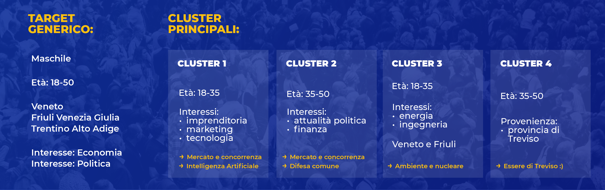
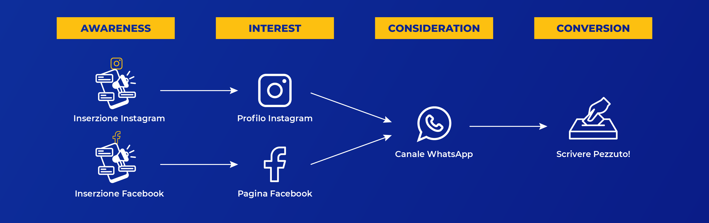
Ho quindi proposto slogan e soluzioni creative di immagine coordinata, realizzato le grafiche di santini, poster, banner e card per i diversi social, scritto e montato video brevi per i social, avviato e gestito le inserzioni micro-targetizzate su Meta.
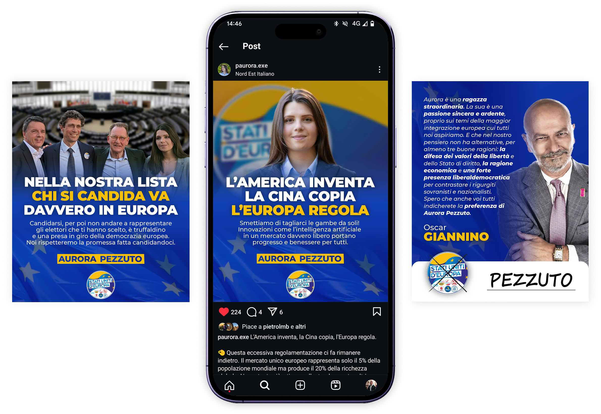
Il micro-targeting utilizzato per la promozione differenziata di ciascun contenuto ha portato ad un esito eccellente. Considerato il deludente risultato della lista e il budget contenuto, Pezzuto ha ottenuto un ottimo numero di preferenze (1.822), che l'hanno portata a superare altri candidati inizialmente più quotati.
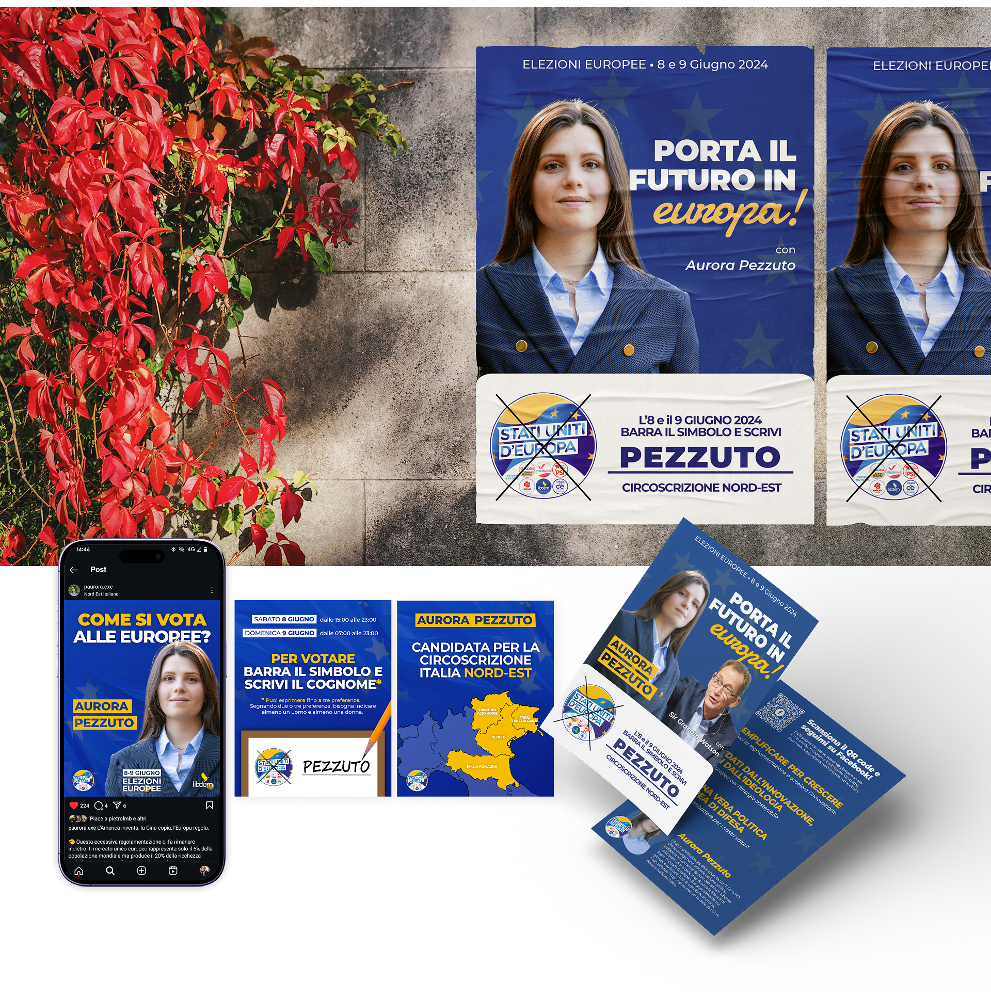
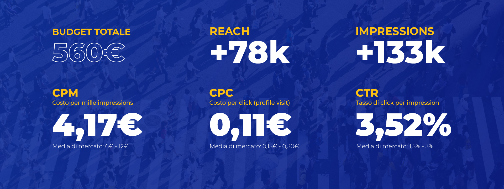
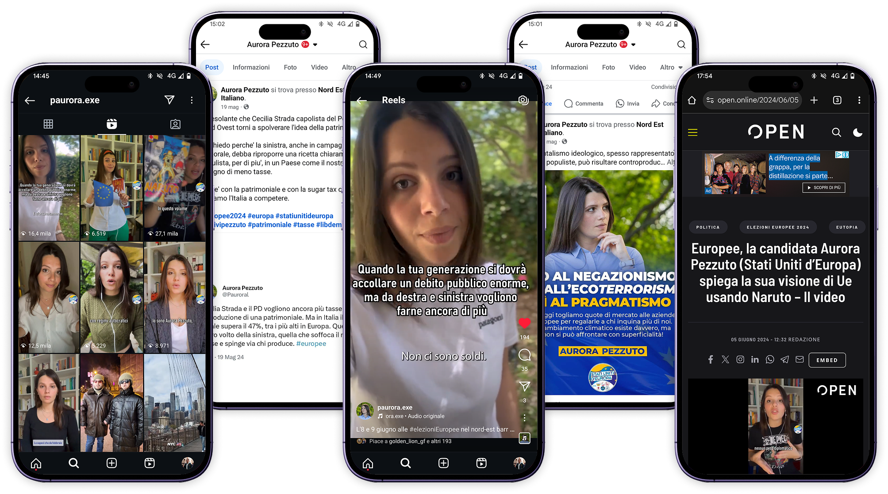
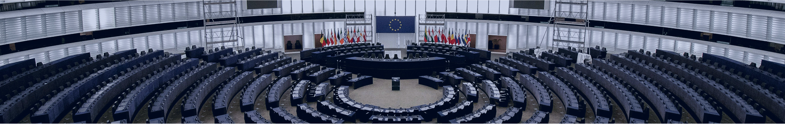
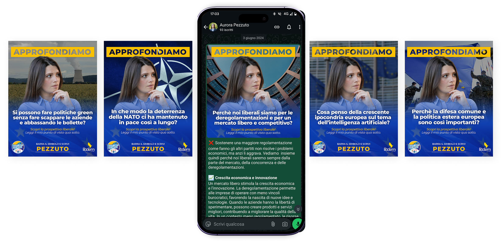
Un sistema completo, dalla strategia all'ultimo santino.